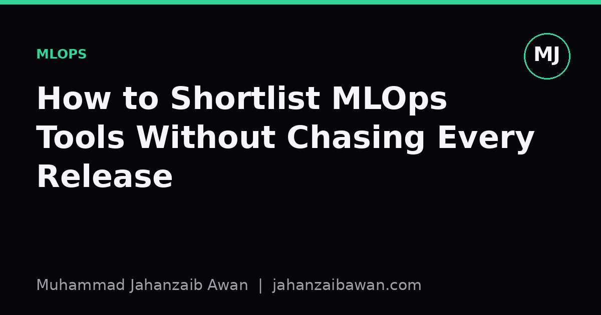

How to Shortlist MLOps Tools Without Chasing Every Release
A small team cannot evaluate every new framework that trends on a given week. Here is a way to pick tools that actually earn their place in your stack.

The real cost of tool churn
Every few weeks a new experiment tracker, feature store, or orchestration framework appears with a polished landing page and a handful of glowing testimonials. For a small team, the temptation to investigate each one is strong, partly because nobody wants to be the person who missed the tool that would have saved three weeks of pain. But investigation is not free. Reading docs, spinning up a demo, migrating a pipeline, and then discovering an edge case that breaks your workflow can easily eat two or three days per tool. Multiply that across a year and a two or three person ML team can lose a meaningful fraction of its capacity to evaluation rather than delivery.
The deeper problem is that tool evaluation without a clear rubric tends to reward whatever is currently loud, not whatever actually fits your constraints. A framework built for a hundred-person platform team solving multi-tenant serving at scale is not obviously better than a simple cron job and a versioned model file, if your team ships one model to production and updates it monthly. Chasing releases optimises for looking current rather than for shipping reliably, and those two goals diverge more often than people admit.
I think the fix is not to ignore new tools entirely, since some genuinely solve painful problems, but to install a deliberate filter before anything gets a serious look. The filter should be boring and repeatable, the kind of thing you can apply in fifteen minutes rather than a week, so that the default answer to a shiny new release is a quick no unless it clears specific bars.
A four-question filter that does most of the work
The first question is whether the tool solves a problem you actually have today, not one you might have in eighteen months. If your team retrains one model a month and deploys it behind a single endpoint, an elaborate multi-model feature store solves a problem you do not have yet. Say your current pain is that you cannot remember which hyperparameters produced last month's best checkpoint. That is a concrete, present problem, and it points you towards a lightweight experiment tracker, not towards a full platform rewrite. Anchoring the search in a named, current pain filters out most candidates immediately.
The second question is the migration cost if the tool disappears or the vendor changes direction in two years. Open source projects get abandoned, startups get acquired and their free tiers vanish, and APIs change in ways that break pipelines quietly. A tool that stores your artefacts in an open format such as plain files, a standard database, or widely supported serialisation is much cheaper to leave than one that locks your metadata into a proprietary schema with no export path. I would rather adopt a slightly less polished tool with an obvious exit than a slick one that requires a rewrite to escape.
The third question is operational burden relative to team size. A tool that needs a dedicated Kubernetes cluster, a message queue, and a database just to track experiments is a poor fit for a team of three where nobody wants to be an on-call infrastructure engineer on top of their research work. Estimate the number of moving parts honestly: if adopting the tool means learning and maintaining two new services, that is a real ongoing cost, not a one-off setup cost, and it should be weighed against what you gain.
The fourth question is whether the tool composes with what you already run, or whether it wants to replace your entire stack. Tools that slot into an existing pipeline as a single component, for example a tracking library that just logs to a folder or a lightweight registry that sits next to your existing storage, are far lower risk than platforms that ask you to migrate everything at once. Composability lets you trial a tool on one project without betting the whole team's workflow on it succeeding.
A worked example: choosing an experiment tracker
Suppose a three-person team is deciding whether to adopt a new experiment tracking tool that just released a well-marketed version two. Applying the filter: the present pain is real, since the team currently tracks runs in a shared spreadsheet and has twice retrained a model because nobody could find which configuration produced the best validation score. That clears question one.
On migration cost, the new tool stores everything in its own hosted database with no bulk export beyond a paid tier. That is a yellow flag, not necessarily a dealbreaker, but it means the team should check whether a free, open alternative with local file storage covers eighty per cent of the need. If a simpler tool logs metrics and parameters to plain CSV files or a lightweight local database, and that is enough to solve the actual pain of losing track of good runs, the extra features of the hosted platform may not justify the lock-in.
On operational burden, the hosted tool needs an account, an API key management process, and a dashboard that someone has to check regularly, whereas the simpler tool needs a single pip install and writes to a folder that is already backed up. For a team without a dedicated platform engineer, the simpler tool wins on this axis by a wide margin, even though it lacks some visualisation polish.
On composability, both tools can sit alongside the existing training script without requiring a rewrite, so this axis does not distinguish them. Weighing the four answers together, the team reasonably picks the simpler, self-hosted option, revisits the decision in six months, and spends the time saved on actually improving the model rather than comparing dashboards. That is the outcome the filter is designed to produce: a decision made once, quickly, and revisited on a schedule rather than every time a new release appears in a newsletter.
Practical takeaway
Set a fixed cadence, perhaps every six months, where the team is allowed to properly evaluate new tools against the current stack, and treat every other week's new release as noise unless it clears the four questions in under fifteen minutes. Keep a short written note of why each core tool was chosen, since that note is what stops the next enthusiastic team member from re-litigating a decision that was already made for good reasons. The goal is not to have the newest stack; it is to spend your limited engineering time on the model and the data, and to let the tooling underneath be quietly reliable rather than quietly fashionable.